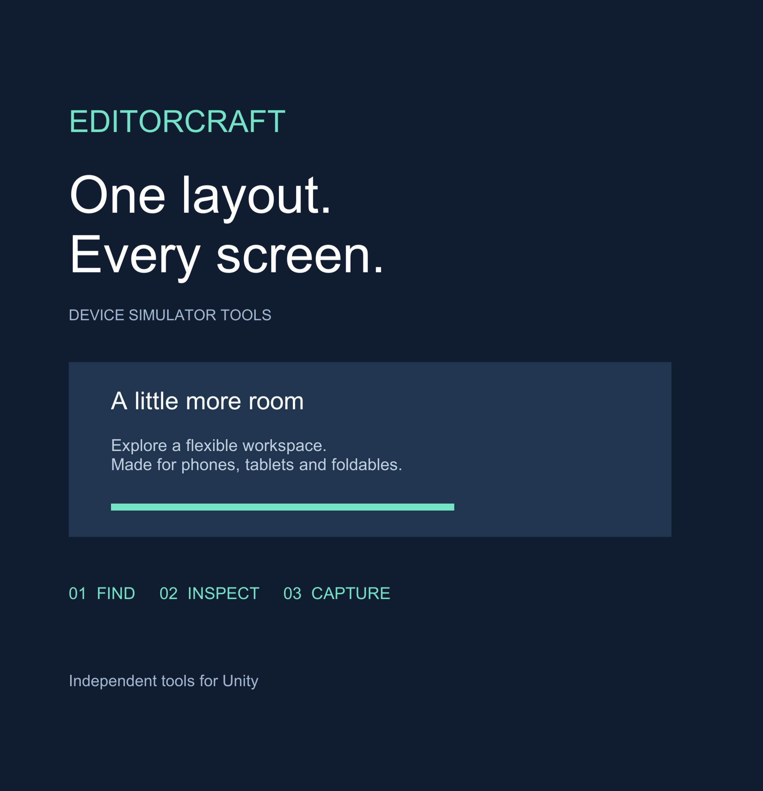
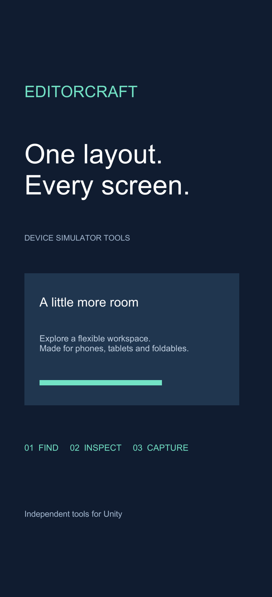

Favorite device captures
Sequential snapshots, not frozen game state or automatic UI pass/fail.

000_Google_Pixel_10_Pro_Fold___Inner_Screen_Portrait.png

001_Google_Pixel_10_Pro_Fold___Outer_Screen_Portrait.png